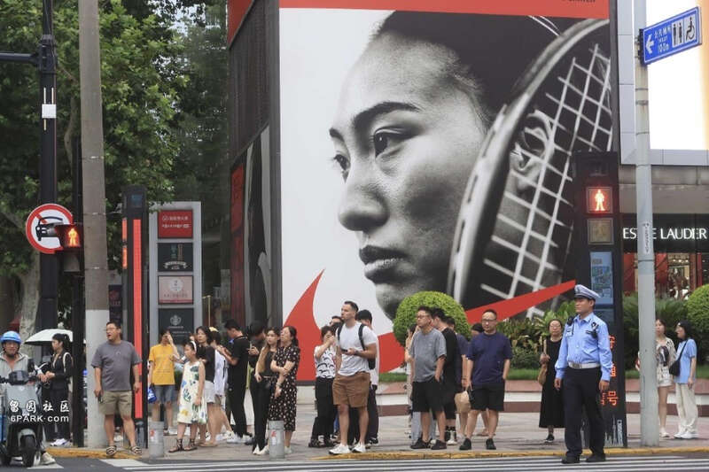
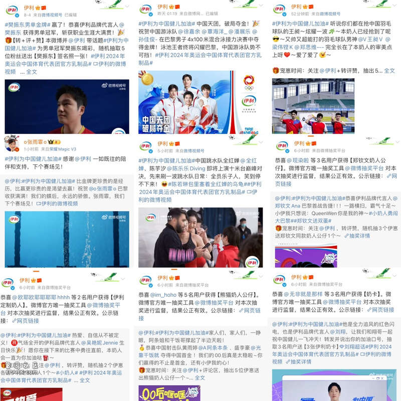
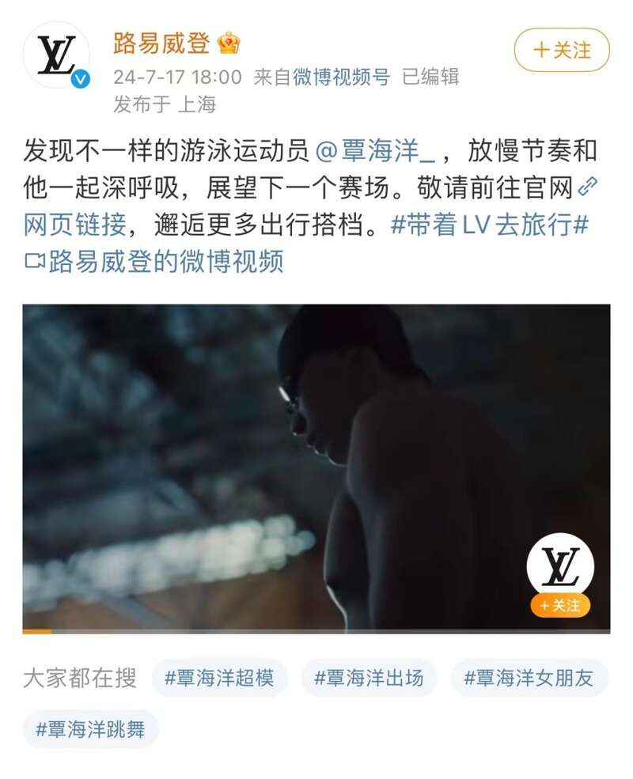
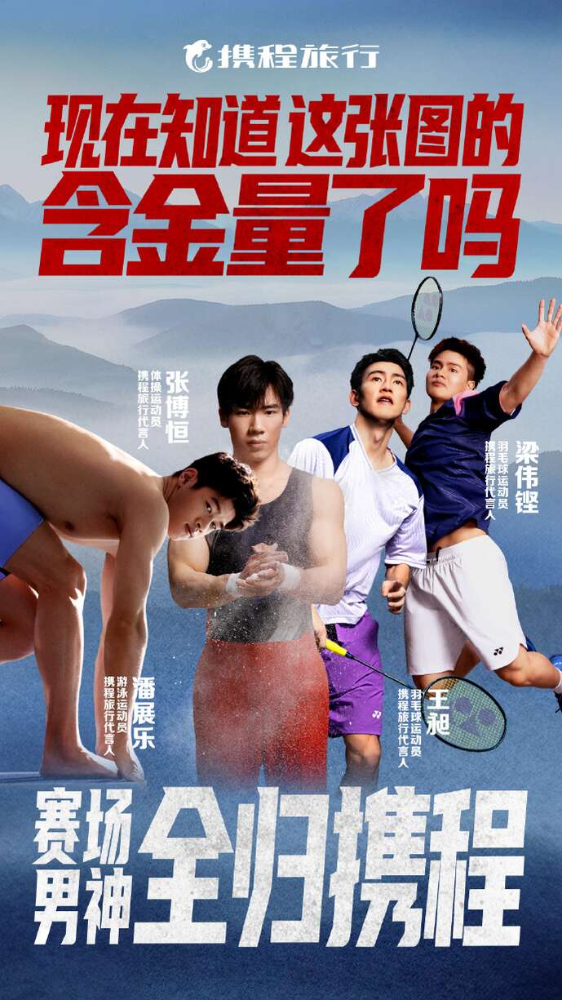

巴黎奥运会后，新一代运动员最具商业价值的运动员浮出水面。
在2024年巴黎奥运会上，中国代表队的老将以及00后小将赢取奖牌的同时，商业价值也再度迎来新一波高峰。事实上，早在巴黎奥运会前，各大品牌已开始陆续押宝签约合作多个领域的运动员，志在抓住奥运营销机遇。
网球选手商业价值靠前，郑钦文今年代言收入或超亿元
最具轰动的当属各品牌对“火箭少女”郑钦文的押注。
8月4日，21岁的郑钦文拿下了中国网球史上首枚奥运单打金牌，创造了中国网球的历史。据澎湃新闻记者梳理，在此次巴黎奥运会前，郑钦文已手握近10个重要品牌的合作，涵盖运动、奢侈品、高端美妆、科技金融公司以及餐饮等多个领域。其中包含耐克、威尔胜、兰蔻、伊利、斯维诗、麦当劳、霸王茶姬、劳力士等品牌。

2024年8月3日，上海，闹市街区矗立的大幅郑钦文广告。视觉中国 图
在去年12月《福布斯》杂志公布的2023年度女运动员收入榜中，郑钦文以170万美元赛事奖金收入和550万美元代言赞助收入（约合人民币近4000万元），总计720万美元收入排到第15位，与谷爱凌一起成为了唯二进入前20位的中国运动员，成为继李娜后首位入选榜单的中国网球选手。在《福布斯》2023年度女运动员收入榜上，前10名中有9人都是网球选手，网球的商业认可度由此可见一斑。
除了获得网球女单冠军的郑钦文，此次巴黎奥运会上张之臻和王欣瑜临时组成的网球混双组合表现也十分亮眼，初次配合即取得了银牌的佳绩。据澎湃新闻记者梳理，张之臻在奥运赛前接连与光明乳业、乐动力、国泰航空、宇舶表、盖世威、TUMI等品牌方签约合作，所代言的品牌方分别涵盖食品饮料、奢侈箱包、高端运动服饰、出行等多个领域。
可以预见的是，在夺冠后郑钦文商业价值即将“暴涨”。郑钦文背后的体育经纪公司为IMG，该公司旗下还有谷爱凌、苏翊鸣、李娜等中国运动员，极为擅长商业运作。IMG的母公司Endeavor，是全球最大的经纪公司。
也有媒体此前报道，李娜澳网夺冠后年收入高达1.4亿元，谷爱凌去年收入也超过1.5亿元，按此推算，去年奖金加代言赞助收入已超5100万元的郑钦文，今年收入破亿并非不可能。
“运动员的商业价值主要是在一些代言合作以及活动费用上体现，如果要获得进一步商业价值，则需要在现役阶段持续不断地刷新战绩来保持存在感。”互联网产业分析师张书乐告诉澎湃新闻记者，奥运会由于全球关注度高，且为综合类国际体育赛事，获得金牌可能被其他受众群，如非单项体育粉丝所关注，很容易达成破圈和全球知名，这使得其相比专项赛事如世界杯，或区域性综合赛事如亚运会等，在商业价值上呈现指数级差异。
老牌消费企业热衷赞助奥运明星，00后运动员崛起受品牌方偏爱
历届奥运会，乒乓球、游泳、跳水、体操、射击等国家队选手普遍会被品牌方所青睐。
澎湃新闻记者通过梳理多个项目赛事的赞助代言来看，除了与运动相关的品牌外，耳熟能详的消费企业是赞助奥运选手的主力军。其中伊利为此次2024年巴黎奥运会中国体育代表团官方乳制品合作伙伴，奥运会前就对乒乓球、游泳、跳水、射击、网球、羽毛球、田径等多个项目的选手进行了签约赞助。出行旅游平台携程也在赛前的签约合作押宝也都押中。此外，一些中高端的奢侈品品牌此次赛前也开启与体育明星之间的代言合作。

具体来看，乒乓球作为历年中国队优势项目，无论是“小魔王”孙颖莎、“大头”王楚钦还是“小胖”樊振东，每一个都是各大品牌方热门押宝的对象。此次奥运会前，与国乒多位选手签约合作的品牌涵盖了食品饮料、服饰、美妆日化、生活用品、数码产品等多个领域。其中，中国运动品牌李宁，选择直接与国乒队开展整体合作。
中国游泳队以2金3银7铜和一个世界纪录，结束此次奥运征程，也是历史上获得奥运奖牌最多的一次。其中，1998年出生的“劳模老将”张雨霏在本次赛事中斩获1银5铜，共计6枚奖牌，个人职业生涯奥运奖牌数达到10枚，成为中国队奥运史上奖牌数最多的运动员。据澎湃新闻记者梳理，老将张雨霏在此次奥运赛前手握的商业代言已超过10个，涵盖服饰、美妆日化、食品饮料、生活用品、厨电等多个领域。其中包括天猫、太平洋保险、伊利、荣耀、欧米茄、科兰黎、迪奥、中国移动、农夫山泉、超能和森歌等品牌。
在8月4日晚男子4×100米混合泳接力决赛，徐嘉余、覃海洋、孙佳俊、潘展乐强势逆转夺冠，打破了美国队在此项目上长达40年的垄断。其中，老将徐嘉余赛前已成为运动休闲品牌Arena的品牌代言人，1999年出生的覃海洋则手握LV、伊利、太平洋保险、超能、农夫山泉、安踏等品牌合作。

值得注意的是，这是00后小将潘展乐在本届奥运赛事中斩获的第二枚金牌，据记者梳理，00后“游泳新星”潘展乐赛前已手握超过6个品牌的合作，涵盖护理、旅游、食品、互联网出行与汽车等行业，其中包括清扬、曼秀雷敦、农夫山泉、携程、极氪汽车、滴滴出行等。
对于老将与小将背后商业价值的衡量，北京社科院副研究员王鹏告诉澎湃新闻记者，除了竞技水平与专业实力、个人形象与公众形象、社交影响与粉丝基础、项目热门程度与关注度外，运动员的代言经验和商业潜力也是品牌方关注的重点。有经验的运动员能够更好地理解品牌需求，配合品牌进行营销活动；而具备商业潜力的运动员则有望在未来取得更大的成功，为品牌带来更长远的利益。
今年奥运会期间，不少00后新星异军突起，用实力征服全球观众，00后运动员的潜质也得到了很多品牌方的偏爱，包括已经炙手可热的郑钦文。
其中，“跳水梦之队”作为拥有00后小将数量较多的队伍，目前已拥有近10个品牌方的合作，涵盖美妆、服饰、教育、食品、洗护、家电等不同消费领域。体操方面，00后中国体操男队领军人物张博恒在赛前已接到超5个品牌代言合作，涵盖保险、食品、电器、旅游与运动品牌等领域。射击队“00后”组合黄雨婷和盛李豪为中国队夺下了巴黎奥运会首枚金牌，而在赛前他们也已与伊利签约合作。
此次奥运国羽以2金3银的成绩收官。国羽的两枚金牌分别是来自女子双打与混合双打。郑思维与黄雅琼的“雅思”组合以及陈清晨与贾一凡的“凡尘”组合奥运前所代言的品牌已涵盖了生活用品、服饰、食品、汽车等多个领域。
此外，梁伟铿搭档王昶首次参加奥运会，就一路杀进男双决赛并拿到了银牌的成绩。值得注意的是，今年7月初，携程旅行宣布的三组代言人中就有“梁王”组合。除这一组合外，还有中国游泳运动员潘展乐以及体操运动员张博恒。有意思的是，这四位运动员均是“00后”：张博恒和梁伟铿出生于2000年，王昶出生于2001年，最小的潘展乐出生于2004年，四人组合成为携程旗下金牌男团成员。

运动员的新一波代言潮将至？有企业称计划与选手争取有更多的合作机会
奥运会结束后，运动员的代言潮将成为另一个重要的商业机会。对于企业品牌而言，赛后热度将为品牌提供新的营销契机。
当前，“运动明星”通过成为品牌代言人、形象大使等获取广告代言费、赞助费已成为运动员变现的主要途径之一。品牌方与运动员之间合作的推广，逐渐成为了双方寻求双赢的一种路径，不仅为运动员提供了更广阔的发展平台，也能为品牌注入了新鲜活力。
为什么企业热衷于与体育明星合作？
8月6日，携程旅行品牌整合营销总经理丁璐在接受采访时表示，体育明星最大的特点是“塌房”概率小一点，也更能代表一个国家或者一个行业的正态风向。丁璐进一步表示，就携程而言，和运动员或艺人签约没有阶梯性的条款，不会按人定价，“最多会有风险条款，例如产生非常大规模的负面舆论，可能会洽谈新的费用，但是正常情况下不会按照金银铜牌或者按照外界风向修改价格。”
对于选择运动明星代言人的考量因素，丁璐指出，不同于奥运投放预算比较大的快消品牌，可能直接选择包揽队伍或者锚定热门夺金人选，携程预算不高，主要会综合考虑选手近一年来的比赛成绩、历史拿牌情况、颜值和年纪以及现有的商务代言挑选合作选手，需要预判选手是否年轻化、成绩佳、项目国际关注度高、自带流量和话题性。
“品牌会考虑运动员的长期价值和专业性，以及是否符合品牌调性，能以国际化姿态塑造品牌形象。”霸王茶姬相关负责人告诉澎湃新闻记者，郑钦文在赛场上展现出的积极、健康、国际化的形象，以及卓越表现和坚毅拼搏的精神，与品牌精神契合度很高。选择郑钦文作为健康大使，是基于双方对彼此价值观和理念的深度认可。霸王茶姬今年4月份就已经宣布郑钦文成为品牌首位“健康大使”。不止郑钦文，此次巴黎奥运会，霸王茶姬还集结了刘翔、汪顺、郑钦文、陈清晨、贾一凡、刘清漪等多位世界级运动员组成霸王茶姬健康大使团。
丁璐还向记者透露，和签约的选手后续还会启动一些商务合作项目，“打算把仅剩的权益放在关于中国入境游宣传的项目上，如果有机会携程也想争取有更多的合作机会。”
不过，摩根大通亚洲消费行业研究主管尹贺告诉澎湃新闻记者，今年作为赛事大年，很多运动品牌会赞助不同的赛事，加大营销费用的投入，这实际上可能对销售的直接拉动作用并不会太大，更多的是从产品形象、价值、美誉度做中长期的投资建设。这部分的投入回报比较难在短期财报上有明确量化的体现，尤其是要进一步细化到不同品类在不同市场方面的投入回报。